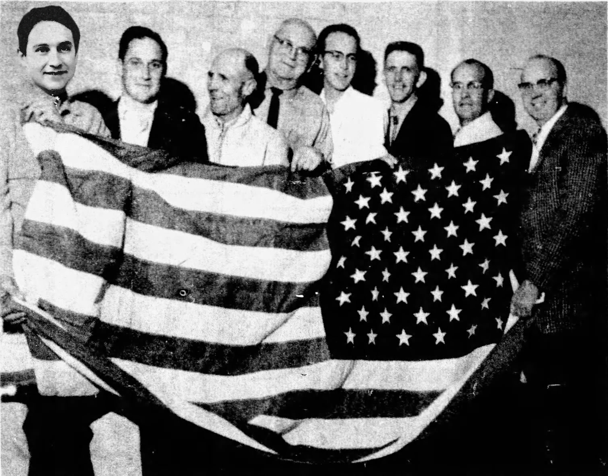

uni87 Archive: Photographs
Archived photographs (scanned from physical or digital) obtained from Universe 087's InterNet
| 1960-1969 | 1970-1979 | 1980-1989 | 1990-1999 |
| 2000-2009 | 2010-2019 | 2020-2029 | 2030-2040 |
1960-1969
| ID | Date (if applicable) | Source (if applicable) | Description | Link |
| PHT-87-WpnZ | May 5, 1964 | Southern Utah News Advertiser | A photograph of the Hurricane High School Engineering Club |  |
1970-1979


1980-1989

1990-1999
2000-2009
Index not found!
2030-2040
Index not found!